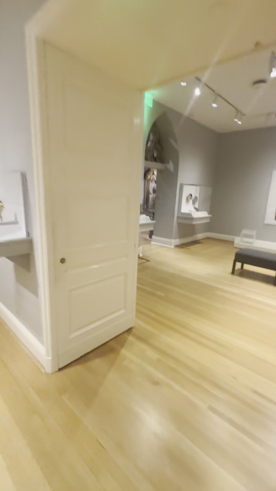
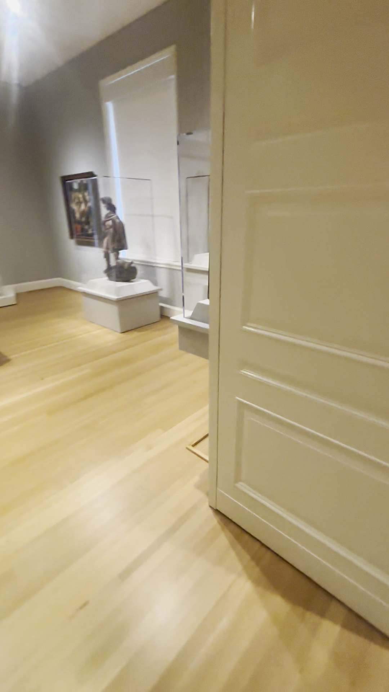
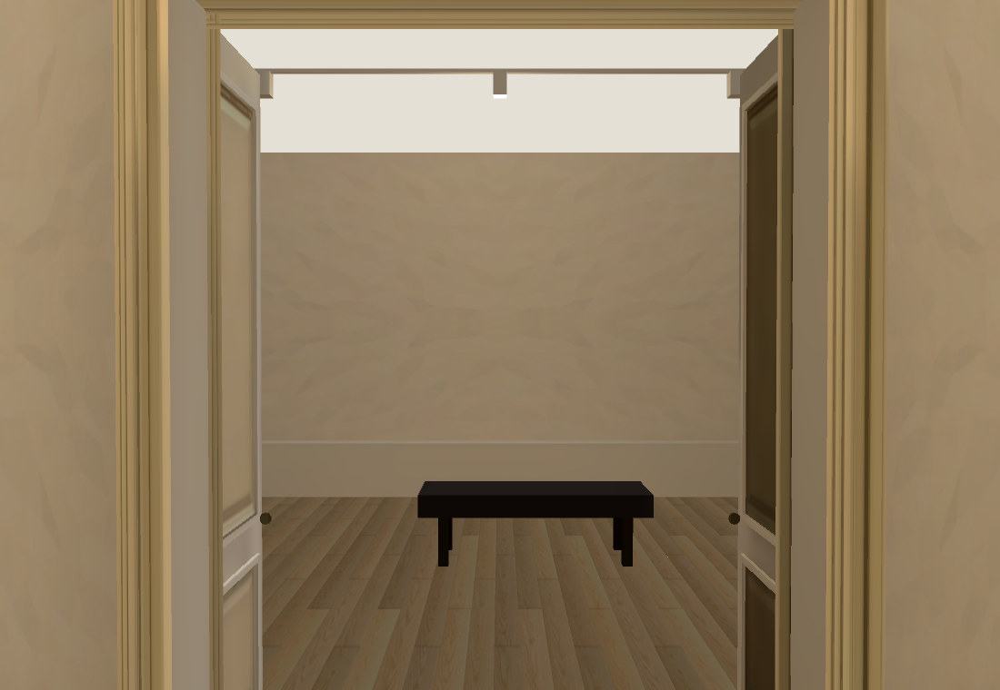
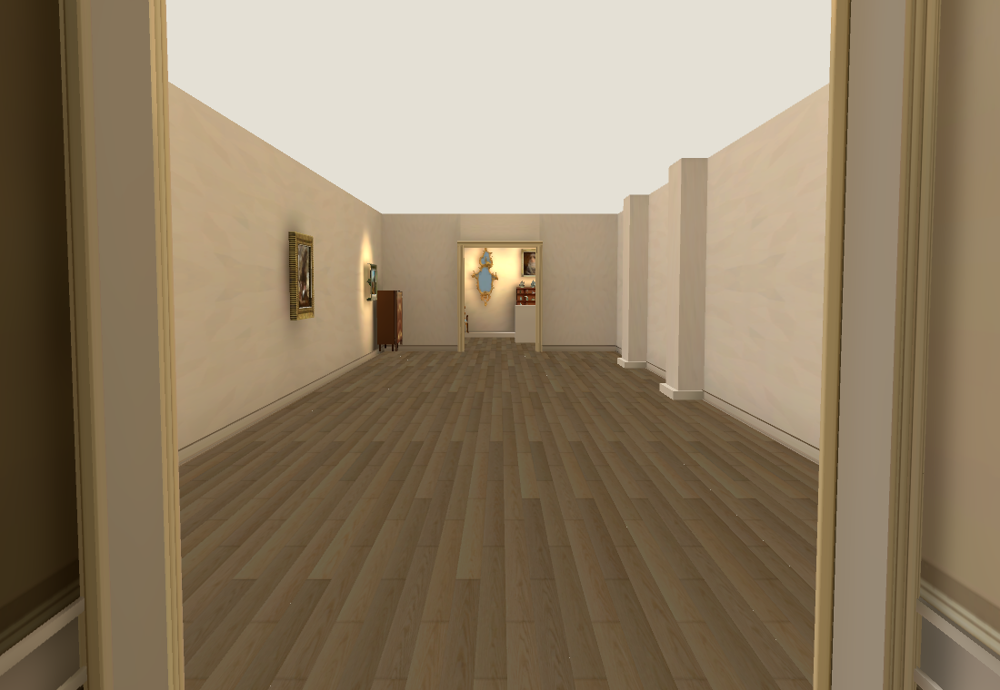
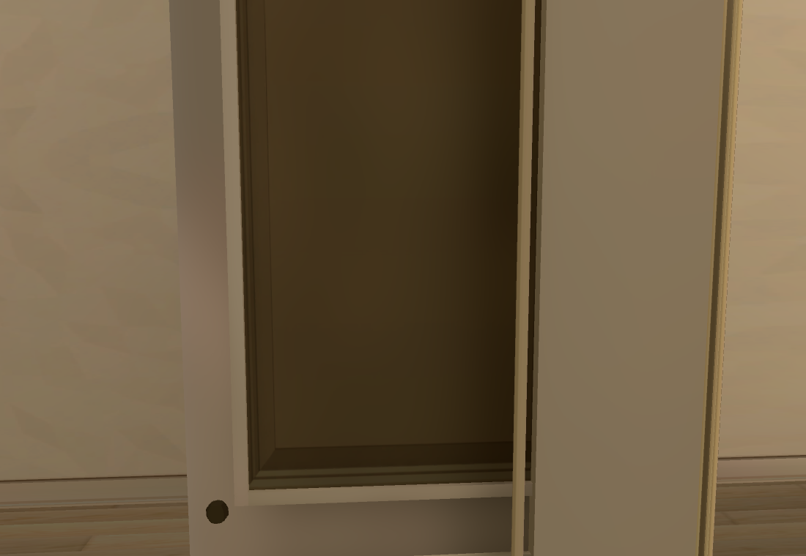
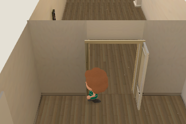
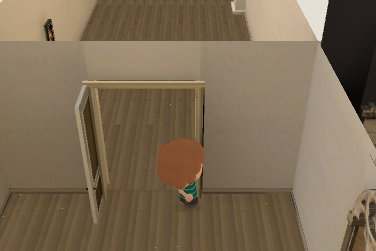

Collection rooms · doorway correction
Walk the latest rooms · Previous room and Ionic architecture review · Wide-view scale study
Press 2 to jump to the European gallery, then walk to its far double doors. WASD moves; Space resets.
Wide shots showed that the European-to-Renaissance leaves were backwards and had the wrong panels. The prototype now swings them into the Renaissance room and replaces three equal panels with a tall upper panel and a shorter lower panel.

Actual left leaf and its swing into Renaissance, IMG_6386 102.75s.
Reciprocal right leaf, IMG_6386 104.75s.
Corrected pair seen from the European gallery. Most Renaissance contents are still missing.
Reverse view into the European gallery; existing room dimensions remain provisional. One Muse pass, $0.01. Invented narrow middle strip discarded; only the two large panel fields are used.
One Muse pass, $0.01. Invented narrow middle strip discarded; only the two large panel fields are used.
Native thickness and panel relief. Panels remain too dark; exact moulding depth and palette are unaccepted.Native and Chrome on RTX 4070 SUPER pass 58/58 collision/camera checks, including both leaf collisions, plus the browser keyboard round trip. Native p9530.56ms; browser p9530.2ms. Performance remains below the 60fps target. Repository checks pass; owning Shell 44/50 with the recorded layout/tint/timing failures. One additional Muse request, cumulative $0.70 actual/$0.71 conservative.

Left leaf blocks the visitor; camera remains clear.
Right leaf collision; clear central crossing.Full reconstruction is unfinished. Hall entrance spacing remains inconsistent; most Renaissance/medieval artwork, cases and sculptures remain unplaced. Next: fit the adjoining room offsets from wide views before joining the full Main Hall. Heartbeat stays disabled; Collection only.